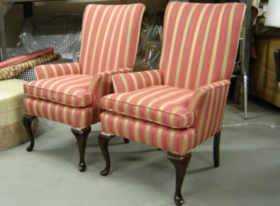
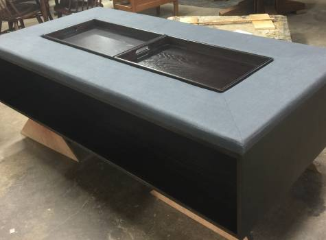

Upholstery & Refinishing


Ablyss is proud to offer top-quality craftsmanship for antique and furniture restoration and repair services in addition to custom furniture design. Since 1954, Ablyss Upholstery & Refinishing has been a premier upholstery and refinishing shop, focused on careful and meticulous work, attention to detail and quality materials.
At Ablyss, our goal is to create and repair furniture in a way that gives it a second life, extends its purpose and makes it a welcome piece in your home.
Superior Upholstery and Refinishing
With more than 60 years of experience, Ablyss specializes in:
Ablyss gladly works on custom projects, finding solutions in furniture repair, refinishing, restoration and upholstery that create one-of-a-kind results and high-end workmanship.


Our Antique Restoration Services
Ablyss offers antique restoration services to bring new life to antiques of all sizes and ages. Our knowledgeable restoration team balances your vision with the best ways to preserve and restore the item for further years of enjoyment. We are proud to show commitment to our customers by carefully handling and caring for their antiques, restoring them to their former glory.
Our Custom Furniture Services in Denver, Colorado
Our recent addition of custom furniture services allows us to show Denver the best in quality furniture. We are proud to have a fourth generation master craftsman continuing the time-honored trade of custom, in-house furniture construction with quality materials and extensive knowledge in furniture making.
Our Furniture Repair Services
Ablyss understands that furniture is an investment, and we want to help you maintain every piece. Our furniture repair services focus on effective ways to return your furniture to working shape while maintaining its style and authenticity. We provide a variety of furniture repair services to meet repair needs of all sizes.
Our Furniture Refinishing Services
We provide furniture refinishing services as a way to not only help maintain your pieces but give you joy in using them. Ablyss offers furniture refinishing for wooden furniture items of all sizes, allowing you to maintain the current stain and look or switch it up for something new.
Ablyss' Upholstery Services
Our Upholstery Services are a point of pride. With more than 100 years of combined experience among our upholstering team, we offer an attention to detail and experience in patternmaking and upholstery techniques that are unsurpassed and allow us to create products with a high-end feel. Let us transform pieces for your home, office or business.
Ablyss is the leading restoration, upholstery and custom furniture shop. Let our team help with your furniture and antique needs. Interested in learning more about our services? Contact us on 303.935.0949 for more information on restoring or repairing your prized furniture pieces.